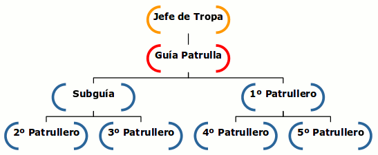
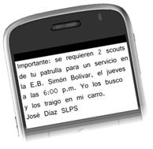
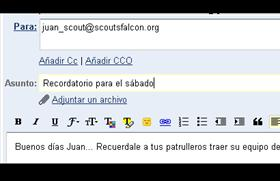

Cadena de comunicaciones
Es recomendable que tu Tropa tenga definida de antemano la forma en que se van a transmitir la información entre sus miembros.
Sobre todo es importante que cada uno sepa con quien debe comunicarse.
Con este sistema se evita que una sola personad deba avisar a todos, y recibir respuesta de todos, ya que esto resulta muy engorroso y difícilmente da buenos resultados.
Un buen ejemplo es el siguiente:

De esta manera el Jefe de Tropa sólo debe comunicarse con los Guías de Patrulla, y esto a su vez sólo con 2 patrulleros, que hacen lo mismo por su parte.
Así tenemos que en muy poco tiempo TODOS los miembros de la Tropa pueden estar enterados de cualquier información.
El medio para comunicarse dependerá de las posibilidades de cada quien, y la premura del mensaje, siendo los mas comunes las llamadas telefónicas, mensajes de texto, correos electrónicos, redes sociales y otros por el estilo.
Es recomendable también que se le de una Jerarquía o Nivel de Importancia a cada mensaje, la cual debe ser conocida de antemano por todos los que forman parte de la cadena, de forma que cada quien sepa que hacer.

Una forma válida para clasificar o jerarquizar los mensajes es:
• Mensaje Estándar o MSTD… En este nivel el tiempo de ejecución es de una semana. Se puede decir que va de una reunión de grupo a otra.
• Mensaje Importante o MI… Requiere ser ejecutado entre las 48 y 72 horas. Aún cuando hay cierto tiempo, es importante comunicar la información lo antes posible.
• Mensaje Urgente o MU… Es el nivel de información que requiere ejecutarse dentro de 24 horas, inmediatamente luego de su emisión. Se emplea sólo en caso de emergencias o de mucha importancia.
En el caso de los mensajes por escrito (notas, mensajes de texto, correos electrónicos, etc…) la Jerarquía se puede colocar al comenzar el mensaje, o en el ítem asunto.
Para facilitar las cosas, en el caso de los mensajes “Estándar” se podría omitir colocar la jerarquía, siempre y cuando esto esté previamente claro para todos.
Como en toda labor de equipo, los resultados dependerán en gran medida de la responsabilidad que cada quien demuestre al cumplir su parte… Es decir, que quien reciba un mensaje deberá transmitirlo sin demora, y a la vez avisar a su superior que ya lo hizo.
Es recomendable también, que para reforzar su comunicación, tu Unidad cuente con un espacio en Internet para tal fin, siendo las opciones más factibles una página Web, un blog, una cuenta en una de las redes sociales, u otro por el estilo.
Esta misma experiencia puede ser aplicada en tu comunidad, creando una “Red de Comunicación” entre los vecinos de tu barrio, edificio o caserío.
Tú puedes ofrecerte para organizar y coordinar esta labor, en conjunto con otros miembros de la comunidad.
Así estarán más preparados para enfrentar cualquier emergencia o eventualidad.